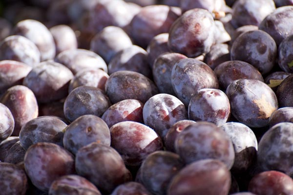

现代社会女性的压力非常的大，上班育儿的双重压力导致很多女性的皮肤偏黄，嘴唇发白，干什么都提不起劲。这是因为气血虚弱导致的，女性气血虚弱不仅会皮肤变差，体质变差容易感冒发烧以及月经不调导致多种妇科疾病的发生。关于女人补肾补气血的食物，有着红枣、红豆、黑米等常见食物。
1、红枣

红枣又名大枣，有着滋阴养血的功效，红枣食用的方法有很多，可以洗干净后直接食用，还能将粥里放上几颗红枣，能增添粥的甜味，红枣也能用来泡水喝。多吃红枣对女性特别好，里面有着丰富的维生素，可以滋养身体，美白肌肤。
2、红豆
红豆是红豆树的种子，有着很好的补血，理气，调理月经的功效。女性每个月都会有一段时间身体不适，吃红豆可以补血还能缓解月经疼痛，红豆的吃法主要是将红豆泡上半小时然后放入锅中和粳米一起煮粥，也可以将红豆单独煮烂后放入豆浆机打碎后再煮一遍做成红豆沙食用。
3、黑米
黑米属于粳米的一种有着很好的药用价值，可以补肾补气血，并且有着多种维生素，能有效地治疗贫血和抗癌作用，并且还能改善体循环，预防心脑血管疾病。食用方法可以单独将黑米泡上，然后煮粥煮烂，也可以配合红豆一起煮粥效果更好。
4、猪肝
猪肝有着治疗气血双虚的作用，日常使用还能预防夜盲、贫血。食用的方法有很多，可以爆炒猪肝味道较好适合成年人食用，但是小孩和大病初愈的患者饮食清淡，可以将猪肝切碎，放入电饭煲中和粳米、葱、姜、蒜等调味品一起煮粥。
5、鸡汤
鸡汤有着很好的补益气血的功效，将鸡洗净，切掉尾部，从尾部塞进葱、姜、蒜等调味品和一根人参，一起熬制成汤，人参是最好的补气药。鸡汤不仅可以直接喝，有些大病初愈见不了油星的朋友，可以用油下面的汤和粳米一起煮粥，不仅口味清淡还能滋补身体。
6、阿胶
阿胶主要是驴皮做成的，很多人都说阿胶其实一点用都没有，但是阿胶美容养颜补气血的功效是中国几千年来多少医家实验过的，只是现在其功效被商家吹捧的妖魔化了。阿胶的确是有滋阴补气血的功效，但是效果并不是立马见效，气血亏损严重，大病初愈和刚生完孩子的可以食用少量阿胶滋补身体养身补气血，吃多了容易上火。
7、红糖
红糖主要的成分是甘蔗榨汁后，浓缩制成的糖，含有多种维生素和各种微量元素，有着补血调经温养的效果，比较适合体质虚弱的朋友食用。红糖的食用方法有很多，最常见的就是开水将红糖泡开直接饮用，红糖水。红糖水很多人用来治疗痛经其实是错误的，特别是气血双虚的朋友喝红糖水不仅不会止住痛经还会加重疼痛。
结语：通过上文的介绍，相信大家都了解了关于7种女人补肾补气血的食物，这七种食物都很适合女性平时滋养食用。